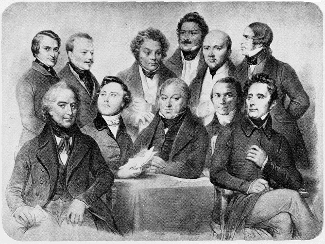

“The revolution made progress, not by its immediate tragicomic achievements but by the creation of a powerful, united counter-revolution, an opponent in combat with whom the party of overthrow ripened into a really revolutionary party.” [The Class Struggle in France]
—— 1850 ——
Major Works
Address of the Central Committee to the Communist League (Marx)
The Class Struggle in France 1848 to 1850 (Marx)
The Peasant War in Germany (Engels)
The Campaign for the German Imperial Constitution (Engels)
“The worst thing that can befall a leader of an extreme party is to be compelled to take over a government in an epoch when the movement is not yet ripe for the domination of the class which he represents and for the realisation of the measures which that domination would imply.” [Marx, Peasant War in Germany]

 |
Articles in Neue Rheinische Zeitung. Revue |
England's 17th c. Revolution (Marx & Engels)
Two Years of a Revolution (Engels)
Correspondence
Letters of Jenny Marx, from London

Articles by Engels in The Democratic Review
Public Statements and Letters to the Editor
Letter to the Prussian Ambassador in London (Marx & Engels, May 30)
Statement by Social-Democratic Refugee Committee (April 20)
To the Hungarian Refugee Committee in London (Engels, late February)
To Chairman of Refugee Committee Meeting in London (Marx, 30 June)
Resignation from the German Workers Educational Society (Sept)
Denunciation of the Universal Society of Revolutionary Communists (Oct)
Statement on Funds of German Workers' Educational Society (Dec)
To the Editor of The Times (Marx & Engels, 28 May)
To the Editor of The Sun The Prussian Refugees, (Marx & Engels, May)
To the Editor of The Spectator (Marx & Engels, 14 Jun)
To the Editor of The Globe (Marx & Engels, mid-June)
To the Editors of the Neue Deutsche Zeitung (Marx & Engels, 4 July)
To the Editors of the Weser Zeitung (Marx & Engels, 10 July)